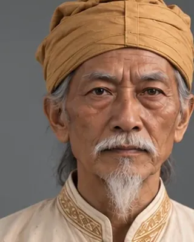

Aikhek Burhagohain
1563 · Burhagohain

Offered little resistance to Chilarai's 1563 invasion and was removed as Burhagohain after the Treaty of Majuli.
Record confidence: medium.
1563 · Burhagohain

Offered little resistance to Chilarai's 1563 invasion and was removed as Burhagohain after the Treaty of Majuli.
Record confidence: medium.